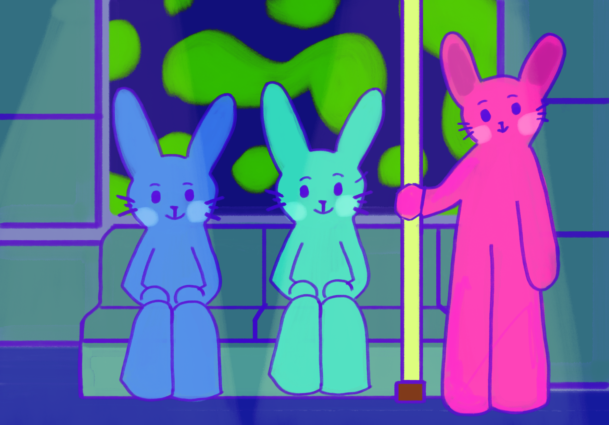

Learn More about Autism and Meltdowns
What is the definition of autism in Singapore? What are meltdowns, and are they the same as throwing a tantrum?

We are Year 2 students from the Design for Social Futures (DSF) programme at LASALLE College of the Arts. To support the mobility experiences of autistic and neurodivergent individuals, we have designed the Calm Cabin - a space intended to make public transportation more accessible and comfortable for everyone.
This website explores what it means to have a meltdown, something that people with autism experience as well as a guide on how to use emotion cards. It is designed to support sensory needs and help make public transportation more comfortable for people with ASD, as well as to spread awareness.
In Singapore, autism is defined as a neurodevelopmental condition that affects communication, social interaction and behaviour, with support needs varying across individuals. It can present differently from person to person, with each individual requiring different levels of support in daily living, communication or learning.
Reference:
SG Enable. “Disability in Singapore - Types, Statistics, Support | SG Enable,” n.d. https://www.sgenable.sg/about-us/our-impact/disability-in-singapore.
Calm Cabin is designed not only for people with ASD but also for people who need to distance from the noise and overstimulating stimuli in the train. The cabin itself is separated from any other cabins to block the noise and visual elements that might lead people to stress.
What is the definition of autism in Singapore? What are meltdowns, and are they the same as throwing a tantrum?
Click here to play a fun activity to prepare you and your loved ones for your train journey!
Learn more about what you or your loved ones can do as someone who experiences meltdowns, or how you can help someone who is having a meltdown.
Did this project strike a chord with you? Share your reflections with us, we would love to hear from you!
Learn MoreAdriel Yap Autism Advocate
Justin Tham Tong’An Autism Advocate, DSF Y1 Student